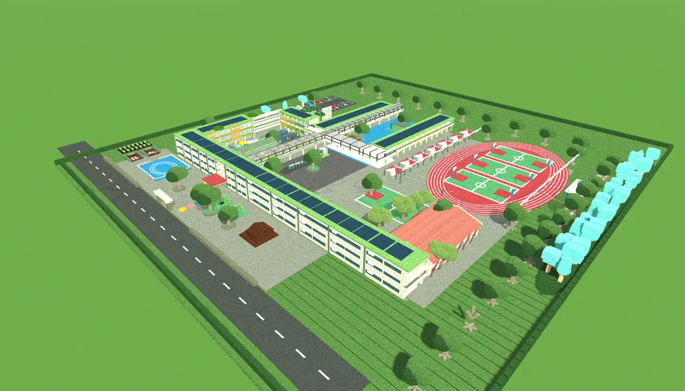
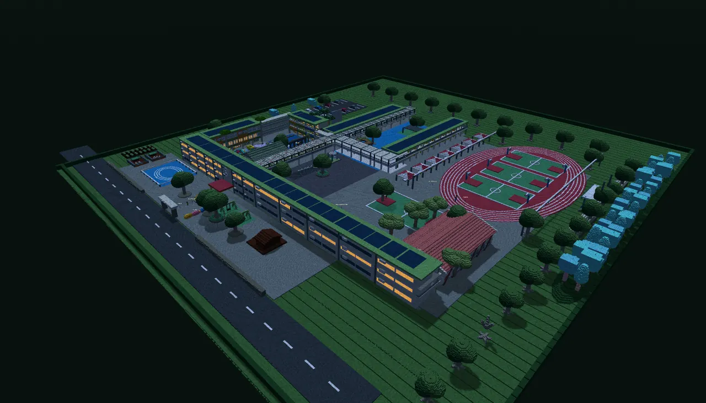
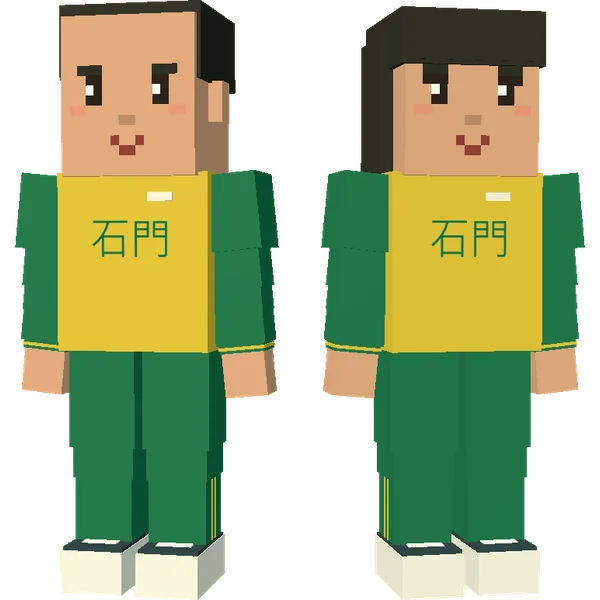
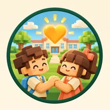
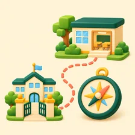

石門・心晴校園石門國小資訊組 3D 校園遊戲
桃園市龍潭區石門國民小學
石門・心晴校園
走進方塊版石門校園，跟著「心晴任務」幫同學解決小麻煩、認識自己的性格，還能自己蓋方塊。家長也可以用「校園導航」看孩子怎麼從校門走到班級。
第一次進入需要下載遊戲，建議使用 Wi-Fi。



跟著台灣時間
白天・傍晚・夜晚
白天・傍晚・夜晚
在校園裡可以做什麼？
一邊認識真實的石門校園，一邊練習和同學好好相處

SEL心晴任務
六個章節幫同學解決校園小麻煩，練習友善、合作、同理、做決定，集滿徽章成為「心晴之星」
- MBTI
性格卡
任務中回答 12 個小問題，抽出 16 種性格卡的其中一張，還有依你的回答給的亮點徽章，看見自己的優點和相處小建議

導航校園導航
選好教室，地上的箭頭就會帶路，從校門走到每一間教室，新生和家長也能先認識校園
- 建造
蓋方塊・看夜晚
點一下放方塊、按住就拆掉；校園跟著台灣時間變成傍晚和星空夜晚，教室窗戶還會亮燈
💻 電腦遊玩
- WASD 移動，滑鼠環視
- 空白鍵 跳躍 Q 操作遊具
- V 第一人稱 X 蓋方塊
- J 心晴任務 N 校園導航 Esc 暫停
📱 手機・平板遊玩
- 左半邊拖曳移動，右側滑動環視
- 上方「視角」切換第一人稱
- 「建造」後點一下放方塊、按住拆掉
- 走到角色身邊就會自動對話